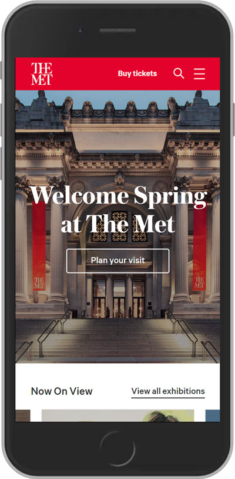

Alignment
Khan Academy
khanacademy.orgThe beginning of the Khan Academy home page demonstates a good example of Alignment. The header, informational paragraph, and start button are all aligned on the left side creating a uniformity and a connection between the elements. This also allowed them to add the colors and imaging to the white space above and to the right of the elements.
Proximity
Newegg
newegg.comOn the newegg site, I liked the proximity that was used to create easy to understand squares for each product. They abbreviated the description of each item in order to keep the proximity between the image, rating, description, and price on each item. This makes it easy to understand that the information below each image is directly related to that product.
White Space/Contrast
The Metropolitan Museum of Art
metmuseum.org The Met page shows a fantastic use of white space and contrast. They filled white space by placing a video in the background of the intro but kept proper space between elements to show separation. The intro has good contrast by utilizing bold white text on top of the darker video so that you can see it over the video. The choices of color also assisted in creating contrast.